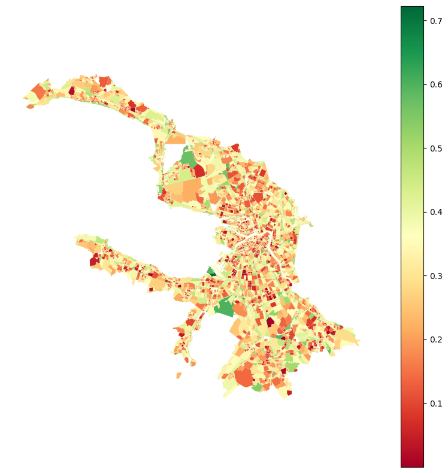

[1]:
import geopandas as gpd
blocks_gdf = gpd.read_parquet('./../data/blocks.parquet')
Features from geometries
[ ]:
from blocksnet.preprocessing.feature_engineering import generate_geometry_features
blocks_gdf = generate_geometry_features(blocks_gdf, True, True)
2025-02-27 20:45:18.660 | INFO | blocksnet.machine_learning.feature_engineering.core:_calculate_usual_features:31 - Calculating usual features.
2025-02-27 20:45:18.863 | INFO | blocksnet.machine_learning.feature_engineering.core:_calculate_radiuses:39 - Calculating radiuses.
100%|██████████| 16320/16320 [00:06<00:00, 2543.49it/s]
100%|██████████| 16320/16320 [00:17<00:00, 927.20it/s]
2025-02-27 20:45:42.889 | INFO | blocksnet.machine_learning.feature_engineering.core:_calculate_aspect_ratios:50 - Calculating radiuses.
100%|██████████| 16320/16320 [00:00<00:00, 33601.54it/s]
2025-02-27 20:45:43.379 | INFO | blocksnet.machine_learning.feature_engineering.core:_calculate_centerlines:18 - Calculating centerlines.
100%|██████████| 16320/16320 [01:24<00:00, 192.77it/s]
2025-02-27 20:47:08.074 | INFO | blocksnet.machine_learning.feature_engineering.core:_generate_combinations:59 - Generating combinations.
[3]:
blocks_gdf.head()
[3]:
| geometry | area | length | corners_count | outer_radius | inner_radius | aspect_ratio | centerline_length | area / aspect_ratio | area / centerline_length | ... | centerline_length * corners_count | centerline_length * inner_radius | centerline_length * length | centerline_length * outer_radius | corners_count * inner_radius | corners_count * length | corners_count * outer_radius | inner_radius * length | inner_radius * outer_radius | length * outer_radius | |
|---|---|---|---|---|---|---|---|---|---|---|---|---|---|---|---|---|---|---|---|---|---|
| id | |||||||||||||||||||||
| 0 | POLYGON ((354918.622 6625258.829, 354901.464 6... | 8.044667e+05 | 6143.314507 | 180 | 1162.200035 | 275.601595 | 2.194869 | 2617.332757 | 366521.462764 | 307.361267 | ... | 471119.896302 | 721341.082285 | 1.607910e+07 | 3.041864e+06 | 49608.287083 | 1.105797e+06 | 209196.006375 | 1.693107e+06 | 320304.183357 | 7.139760e+06 |
| 1 | POLYGON ((355412.142 6623378.149, 355411.700 6... | 2.317313e+04 | 1305.400332 | 53 | 317.246543 | 18.863753 | 15.785382 | 597.665957 | 1468.011981 | 38.772712 | ... | 31676.295727 | 11274.223157 | 7.801933e+05 | 1.896075e+05 | 999.778924 | 6.918622e+04 | 16814.066800 | 2.462475e+04 | 5984.460523 | 4.141337e+05 |
| 2 | POLYGON ((353934.329 6625429.433, 353923.453 6... | 3.630058e+05 | 2744.750098 | 88 | 485.977014 | 177.288792 | 1.107639 | 834.379506 | 327729.351635 | 435.060801 | ... | 73425.396513 | 147926.134761 | 2.290163e+06 | 4.054893e+05 | 15601.413707 | 2.415380e+05 | 42765.977253 | 4.866134e+05 | 86158.277855 | 1.333885e+06 |
| 3 | POLYGON ((355099.099 6623847.765, 355074.808 6... | 1.964145e+05 | 2588.389797 | 77 | 588.944022 | 67.061572 | 2.632711 | 1275.337210 | 74605.407472 | 154.009836 | ... | 98200.965151 | 85526.117570 | 3.301070e+06 | 7.511022e+05 | 5163.741011 | 1.993060e+05 | 45348.689679 | 1.735815e+05 | 39495.511670 | 1.524417e+06 |
| 4 | POLYGON ((352766.168 6621954.748, 352744.412 6... | 1.781752e+06 | 5826.501550 | 156 | 1227.910036 | 473.974675 | 1.864688 | 1115.790852 | 955522.428530 | 1596.850837 | ... | 174063.372893 | 528856.606604 | 6.501157e+06 | 1.370091e+06 | 73940.049330 | 9.089342e+05 | 191553.965597 | 2.761614e+06 | 581998.260421 | 7.154420e+06 |
5 rows × 71 columns
[5]:
blocks_gdf.plot('centerline_length / length', legend=True, cmap='RdYlGn', figsize=(10,10)).set_axis_off()
